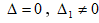
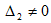
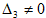

Определение. Решением системы (4.1) называется такая совокупность n чисел, при подстановке которых каждое уравнение системы обращается в верное равенство.
Системы n- линейных уравнений с n- неизвестными могут иметь единственное решение, бесчисленное множество решений
Системы n- линейных уравнений с n- неизвестными могут не иметь решений.
Определение. Система уравнений называется совместной, если она имеет хотя бы одно решение, и несовместной, если она не имеет решений.
Определение. Совместная система уравнений называется определенной, если она имеет единственное решение, и неопределенной, если она имеет более одного решения.
Определение. Две системы называются равносильными или эквивалентными, если они имеют одно и тоже множество решений.
В теории исследования систем линейных уравнений эквивалентными преобразованиями считаются:
1. Перенос членов из одной части уравнения в другую.
2. Почленное умножение обеих частей уравнения на один и тот же отличный от нуля множитель.
3. Почленное вычитание из уравнений системы одного какого-либо уравнения.
Рассмотрим методы решения системы линейных уравнений.
5. Решение системы n-линейных уравнений с n - неизвестными методом Крамера
Рассмотрим систему трех уравнений с тремя неизвестными и решим ее методом Крамера:
Составим определитель из коэффициентов при неизвестных, называемый главным определителем системы:
А также определители, называемые вспомогательными или дополнительными, получаемые из главного определителя поочередной заменой столбцов столбцом свободных членов:
Тогда система имеет решение следующего вида:
Для системы уравнений можно рассмотреть случаи:
1) Если главный определитель системы не равен нулю, т.е. , то система имеет единственное решение.
2) Если главный определитель системы равен нулю и хотя бы один из дополнительных определителей отличен от нуля, т.е.
 или  или , то система не совместна.